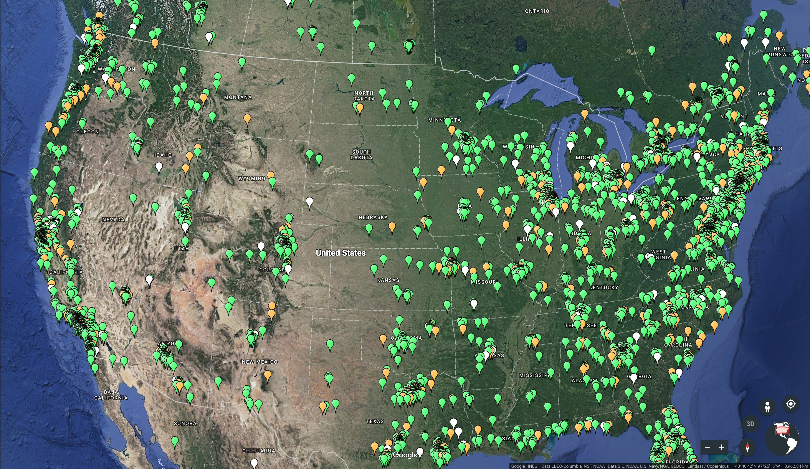
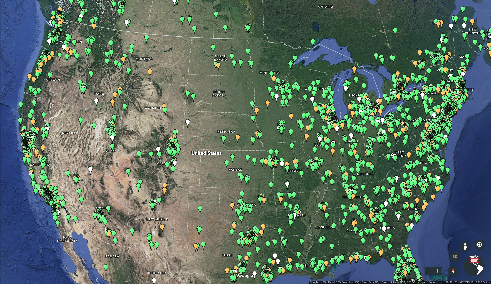

A cypherpunk végjátéka
Virtuális alkotásaink uralma
2018. október 19.
DiSz, Székelyudvarhely
Szilágyi Péter
Ethereum Team Lead
Szilágyi Péter
Ethereum Team Lead

"Az alapjai épülnek egy dosszié társadalomnak, melyben számítógépek következtetik egyének életstílusát, szokásait, hollétét és kapcsolatait egyszerű fogyasztói ügyekből gyűjtött adatokból. [...] Egyének profiljaira epülő, kifinomult marketing technikákat alkalmaznak a közvélemény formálására és választások megdöntésére."
"[...] Mi, a cypherpunkok, dedikáltak vagyunk névtelen rendszerek építésére. A magánéletün-ket védjük kriptográfiával, levéltovábbító rendszerekkel, digitális aláírásokkal és elektronikus pénzzel.
A cypherpunkok kódolnak. Tudjuk, hogy valakinek meg kell írni a szoftvert ami magánéletün-ket megvédi, és mivel a védelmet csak akkor kaphatjuk meg, ha mindenki megkapja, hajlan-dóak vagyunk magunk megírni. Közzé tesszük kódunk, hogy társaink gyakorolhassanak és játszhassanak vele. A kódunk igyenes bárkinek, világszinten. Nem érdekel ha nem értesz egyet a szoftverrel amit írunk. Tudjuk, hogy a szoftver nem semmisíthető meg és hogy egy tágasan szétszórt rendszer nem állítható le. [...]"
~Eric Hughes: Cypherpunk manifesto Bram Cohen (BitTorrent)
Hal Finney (PoW)
Ben Laurie (OpenSSL)
Moxie Marlinspike (Signal)
Bram Cohen (BitTorrent)
Hal Finney (PoW)
Ben Laurie (OpenSSL)
Moxie Marlinspike (Signal)
 Nick Szabo (Smart Contracts)
Phil Zimmermann (PGP)
Nick Szabo (Smart Contracts)
Phil Zimmermann (PGP)
"A közösséget a résztvevők együttműködése határozza meg, ennek hatékonysága pedig csere-eszközt (pénz) igényel. [...] Hagyományosan ezt a kormány vagy a kormány által támogatott intézmények nyújtják. [...] Egy kripto-anarchia során a kormányt nem ideiglenesen pusztítják el, hanem véglegesen tiltják és teszik feleslegessé."
Pénzügyi protokoll melyben minden résztvevő követi mindenki számláját
"A közösséget a résztvevők együttműködése határozza meg, ennek hatékonysága pedig csere-eszközt (pénz) igényel. [...] Hagyományosan ezt a kormány vagy a kormány által támogatott intézmények nyújtják. [...] Egy kripto-anarchia során a kormányt nem ideiglenesen pusztítják el, hanem véglegesen tiltják és teszik feleslegessé."
Pénzügyi protokoll melyben minden résztvevő követi mindenki számláját

2014 – Vitalik Buterin – Ethereum
 


 Ethereum hálózat elterjedése 2017. július 18-án (~24 ezer csomópont)
Ethereum hálózat elterjedése 2017. július 18-án (~24 ezer csomópont)


Idegenektől pénzgyűjtés saját projektre
Apró programozott szerződés (az ni ⇒)
Ethereum Team Lead